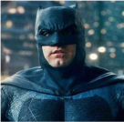
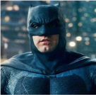

BATMAN
Batman ou Homem-Morcego é um super-herói de quadrinhos publicados pela DC Comics. Criado pelo desenhista Bob Kane e pelo escritor Bill Finger, apareceu pela primeira vez na revista Detective Comics (maio de 1939). Originalmente com o nome "o Bat-Man",
Ver mais

MULHER MARAVILHA
É uma super-heroína criada por William Moulton Marston para a editora DC Comics. Ela é uma princesa guerreira das Amazonas, uma cidade fictícia baseada nas Amazonas da mitologia grega. Em sua terra natal, é conhecida como Princesa Diana de Themyscira, mas fora disso ela usa a identidade secreta de Diana Prince.
Ver mais

SUPERMAN
É um super-herói que apareceu pela primeira vez nos quadrinhos americanos publicados pela DC Comics. O personagem foi criado pelo escritor americano Jerry Siegel e pelo artista canadense Joe Shuster em 1933, quando ambos moravam em Cleveland, Ohio.
Ver mais

ARLEQUINA
Arlequina é uma personagem fictícia criada pelos americanos Paul Dini e Bruce Timm para a DC Comics. Quinn fez sua estréia no vigésimo segundo episódio de Batman: The Animated Series, "The Joker's Favor", em setembro de 1992 e se tornou uma vilã recorrente na série.
Ver mais